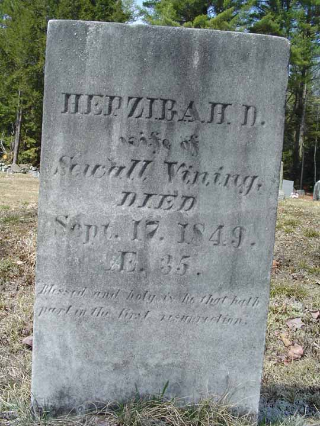
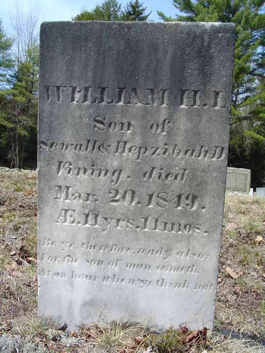

Census Data
| 1840 | 1850 | 1860 | 1870 | 1880 | 1890 | |
| Sewall Vining | ? | 42 | 50 | 62 | 72 | ? |
| Hepzibah D. (Blanchard) Vining | ? | dead | ||||
| Mrs. Mary (Randall) Vining | 40 | 59 | ? | ? | ||
| Ellen Augusta Vining | ? | 17 | [living? in separate household] | |||
| William H. L. Vining | ? | dead | ||||
| Edward Orville Vining | 7 | [living? in separate household] | ||||
| Henry Sewall Vining | 7 | 17 | living in separate household | |||
| Everard Augustus Vining | 4 | 15 | [living? in separate household] |


Death Data
Gravestone of Hepzibah D. (Blanchard) Vining, in Strout Cemetery, Durham, Androscoggin County, Maine:
